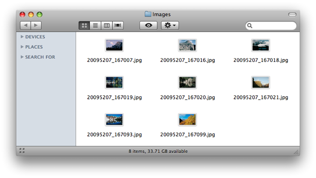
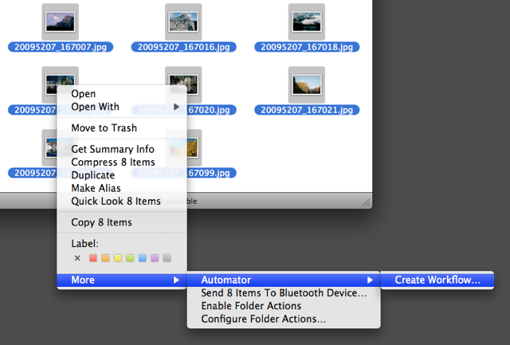
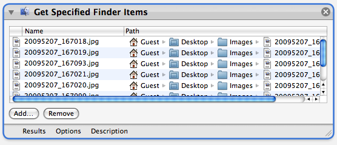

Tutorial 02: New Workflow using Selected Finder Items
This example is easy-to-follow and useful. It's a great workflow to introduce yourself to Automator. Click here to download the image files used in this demonstration.
Let's begin.
The group of image files pictured below are named in a manner typical to photos extracted from a digital camera or photo CD collection. Their numeric names do little to describe the content of the photos, making their identification more difficult. A more practical naming scheme would be to name the images sequentially with an identifier such as: Yosemite-001.jpg, Yosemite-002.jpg, Yosemite-003.jpg, etc.
However, re-naming a group of files in the Finder is a repetitive and time-consuming task, as each file must be individually selected and edited by hand. Re-naming a large group of files can take quite a while to complete. Using Automator, this task can be accomplished in seconds.

Step 1: Create a new workflow.
Automator automates repetitive tasks by applying a series of steps, called a workflow, to a group of specified items such as the image files displayed in the previous illustration.
Each step in the workflow is called an action. You create a workflow by first adding the items to process to the Automator window and then locating and adding the actions necessary to accomplish each step of the task.
The first step to automate the re-naming of the image files is to add them to a new Automator workflow. The easiest way to accomplish this in the Finder is to select the items to process and then summon the Finder Contextual Menu by clicking on the selected items with the Control key held down.

At the bottom of the Finder Contextual Menu is a sub-menu named More. Choose Automator > Create Workflow... from the sub-menu. A new Automator window will open, displaying a workflow that begins with an action that lists the items that were selected in the Finder.
